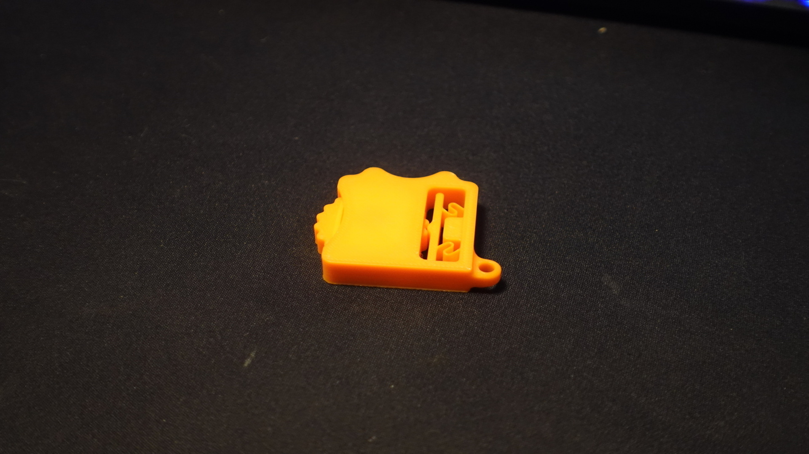
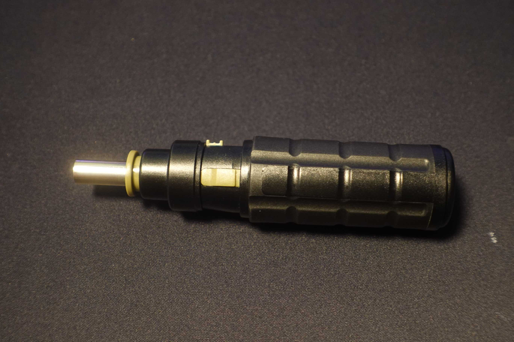
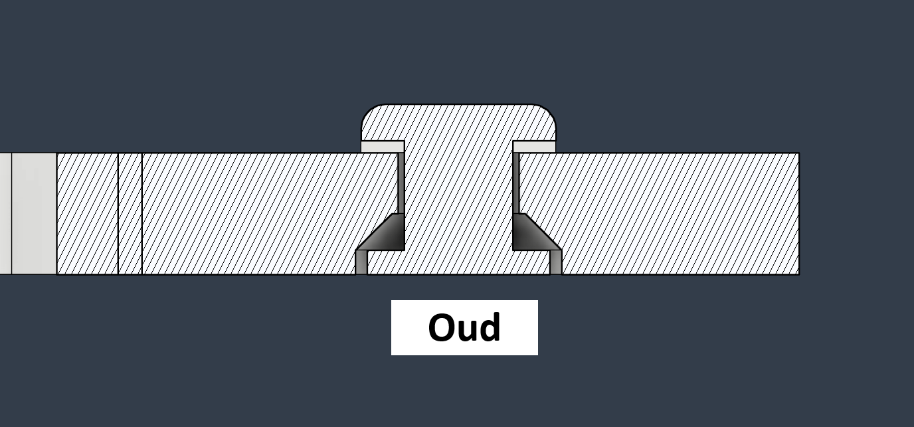
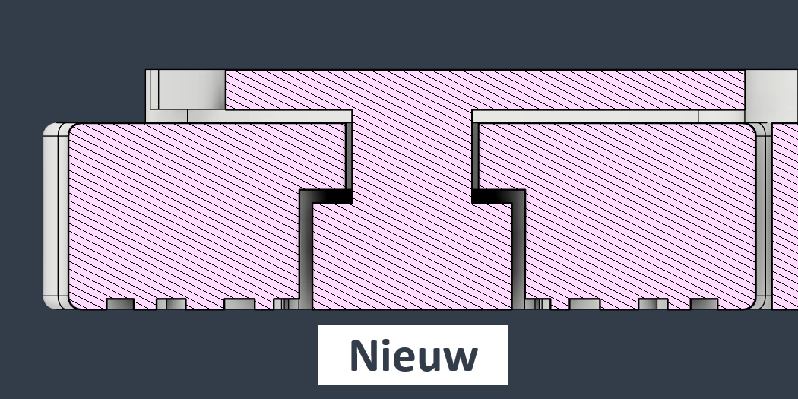

PO2 - Giveaway Keychain Fidget
Marktonderzoek + brainstorm
Ik begon mijn marktonderzoek door na te denken over wat kinderen in groep 8 van de basisschool leuk vinden. Later gebruikte ik dit als basis om mijn zoektocht te vereenvoudigen. Ik kwam allerlei ideeën tegen, zoals fidget spinners, sleutelhangers en andere leuke items, maar niets sprong er echt uit. Dus besloot ik in mijn kamer rond te kijken en kreeg ik ineens een goed idee. Een paar maanden geleden had ik namelijk van mijn sponsor PCBWay een schroevendraaier gekregen (zie foto), met een ratchet-mechanisme en verschillende handige functies. Vooral dat ratchet-mechanisme trok mijn aandacht, dus ging ik op Makerworld verder op zoek naar inspiratie. Uiteindelijk vond ik precies wat ik zocht. In de bijgevoegde brainstorm zie je ook dat ik steeds meer naar fidget toys neigde. Ik wilde namelijk iets maken dat kinderen niet meteen zouden weggooien, maar dat ze bijvoorbeeld aan hun sleutels konden hangen en mee konden spelen als ze zich verveelden. Daarom dacht ik dat een simpele sleutelhanger met bijvoorbeeld het Jan van Brabant-logo erop snel in de prullenbak zou belanden, omdat het niet echt nuttig is. Ik heb mijn ontwerp daarna uitgebreid getest bij mijn vrienden, en zij vonden het allemaal vrij leuk en interessant om mee te spelen.
Schets + ontwerp
Normaal maak ik bijna nooit een schets en begin ik meteen met het ontwerp, waarna ik zie hoe het gaat. Ik heb dan een idee in mijn hoofd, wat je misschien een soort 'mentale schets' kunt noemen, en dat werk ik vaak vanzelf uit in Fusion360 en later in het echte ontwerp. Voor dit project heb ik wel op een paar dingen gelet die erin moesten. Ik wilde een S-vormige veer maken van 0,8 mm breed (omdat de nozzle 0,4 mm is, wat zorgt voor een veer die niet te moeilijk in te drukken is, maar ook niet te snel kapot gaat). De as waar het wiel op zat, was ook een uitdaging, want het moest soepel kunnen draaien én goed te printen zijn. Eerst had ik een V-vorm gemaakt (twee keer een 'V' in elkaar, waarbij de onderkant van de V vastzat aan het lichaam, zie in de foto's hieronder). Maar het printte niet goed, en het wiel kwam vast te zitten aan het lichaam. Daarom heb ik de vorm veranderd naar een rechthoek, en nu draait het wiel soepel en werkt het goed.
 Reflectie
Ik vond dit een leuk project om te maken en heb er wel wat van geleerd (niet heel veel), zoals dat PETG het beste materiaal is om veren mee te printen, hoe je een 3D-geprinte 'bearing' het beste kunt maken en hoe je ontwerpen kunt optimaliseren voor print-in-place. Ik ben tevreden met het eindresultaat en hoop zeker dat het gekozen wordt voor de giveaway.